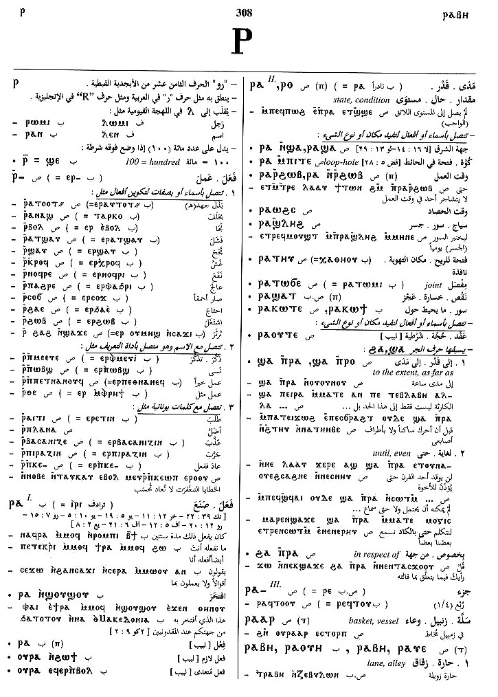

(verb)
intr: S,A,B,F
― act [ποιειν, πρασσειν]
― become, befall [ειναι, γινεσθαι]
― c dat
tr:
― make, do
― make, bear fruit
― pass time
― make total, amount to
― make price, value at
― as vb of direction
― act [ποιειν, πρασσειν]
― become, befall [ειναι, γινεσθαι]
― c dat
tr:
― make, do
― make, bear fruit
― pass time
― make total, amount to
― make price, value at
― as vb of direction
(S, A, sA, O)
ⲉⲓⲣⲉ
(sA) ⲓⲣⲉ
(B) ⲓⲣⲓ
(F) ⲓⲗⲓ
(B, F) ⲣⲁ, ⲗⲁ
(S, A, sA, O) ⲣ-
(S, B, O) ⲉⲣ-
(F) ⲉⲗ-
(S) ⲁⲁ=, ⲉⲓⲁⲧ=
(A, sA) ⲉⲉⲧ=
(sA) ⲉⲉⲓⲧ=
(sA) ⲉⲉ=, ⲁⲉ=
(B) ⲁⲓ=
(F) ⲉⲓ=, ⲉⲓⲧ=
(O) ⲁⲓⲧ=
(NH) ⲁ= {ext codex II - The Gospel of Thomas; 107; 43; 19; ⲛⲕⲉⲥⲙⲟⲧ ϥⲛⲁϣⲁⲥ ⲁⲛ; Ext}, {codex II - The Gospel of Philip; 108; 77; 4; ϥⲛⲁⲁϥ ⲉϥⲟⲩⲁⲁⲃ; Ext}
(S, sA, F) ⲟ+
(A) ⲉ+, ⲉⲓⲉ+
(sA) ⲟⲉⲓ+
(B, F) ⲟⲓ+
(F) ⲁⲓ+, ⲉⲓ+, ⲉ+
(S) imperative: ⲁⲣⲓⲣⲉ
(B) imperative: ⲁⲣⲓⲟⲩⲓ
(S, A, B) imperative: ⲁⲣⲓ-
(A, sA) imperative: ⲉⲣⲓ-
(F) imperative: ⲁⲗⲓ-, ⲁⲗⲉ-
(S, sA) imperative: ⲁⲣⲓ=
(B) imperative: ⲁⲣⲓⲧ=
(F) imperative: ⲁⲗⲓⲧ=
(sA) ⲓⲣⲉ
(B) ⲓⲣⲓ
(F) ⲓⲗⲓ
(B, F) ⲣⲁ, ⲗⲁ
(S, A, sA, O) ⲣ-
(S, B, O) ⲉⲣ-
(F) ⲉⲗ-
(S) ⲁⲁ=, ⲉⲓⲁⲧ=
(A, sA) ⲉⲉⲧ=
(sA) ⲉⲉⲓⲧ=
(sA) ⲉⲉ=, ⲁⲉ=
(B) ⲁⲓ=
(F) ⲉⲓ=, ⲉⲓⲧ=
(O) ⲁⲓⲧ=
(NH) ⲁ= {ext codex II - The Gospel of Thomas; 107; 43; 19; ⲛⲕⲉⲥⲙⲟⲧ ϥⲛⲁϣⲁⲥ ⲁⲛ; Ext}, {codex II - The Gospel of Philip; 108; 77; 4; ϥⲛⲁⲁϥ ⲉϥⲟⲩⲁⲁⲃ; Ext}
(S, sA, F) ⲟ+
(A) ⲉ+, ⲉⲓⲉ+
(sA) ⲟⲉⲓ+
(B, F) ⲟⲓ+
(F) ⲁⲓ+, ⲉⲓ+, ⲉ+
(S) imperative: ⲁⲣⲓⲣⲉ
(B) imperative: ⲁⲣⲓⲟⲩⲓ
(S, A, B) imperative: ⲁⲣⲓ-
(A, sA) imperative: ⲉⲣⲓ-
(F) imperative: ⲁⲗⲓ-, ⲁⲗⲉ-
(S, sA) imperative: ⲁⲣⲓ=
(B) imperative: ⲁⲣⲓⲧ=
(F) imperative: ⲁⲗⲓⲧ=
| With prepositions:4206 | Crum: 83b | ||||||||
| ⲉ- (c) | befall, be incumbent on
do on behalf of, make into4207 |
||||||||
| ⲉϫⲛ- (c) | 5513 | ||||||||
| ⲙⲛ-, ⲛⲉⲙ- (c) | 5514 | ||||||||
| ⲛⲙⲙⲁ= (c) | 5515 | ||||||||
| ϩⲁ- (c) | 5516 | ||||||||
| ϩⲁϫⲛ- (c) | 5517 | ||||||||
| ϩⲓϫⲛ- (c) | 5518 | ||||||||
| (B, F) ⲣⲁ, ⲗⲁ | 391 | ||||||||
| (S, A, B, O) ⲣ-, ⲉⲣ-, ⲟ, ⲟⲓ (&c) | combined with nn, adj S,A,B,O392 | ||||||||
| (S, B) ⲣ ⲡⲕⲉ- | where ⲕⲉ- = very, even, etiam, ipse393 | Crum: 84a | |||||||
| (S, B) ⲣⲉϥⲉⲓⲣⲉ, ⲣⲉϥⲓⲣⲓ (noun) | (noun)
maker, doer394 |
||||||||
| (S) ⲣⲙⲛⲉⲓⲣⲉ (noun) | (noun)
worker395 |
||||||||
| (S) ⲉⲓⲣⲉ (ⲡ) | (noun male)
doing396 |
||||||||
| (B)
ⲁϣⲓⲣⲓ
(F) ⲁϣⲓⲗⲓ |
(p.c. of ⲁϣⲁⲓ + ⲓⲣⲓ), diligent person (lit doing much)397 | ||||||||
| ⲙⲉⲧⲁ. (ⲧ) | (noun female)
activity, diligence398 |
||||||||
| (S, B) ⲧⲁϣⲉ ⲉⲓⲣⲉ, ⲧⲁϣⲉ ⲓⲣⲓ | (verb)
do more, increase doing399 |
||||||||
Crum: 83,84

83

84
Dawoud: 84a-85a,
308a, 39b-40a,
2a, 230a, 11a-11b

84

85

308

39

40

2

230

11